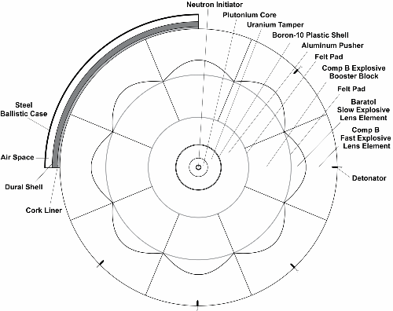
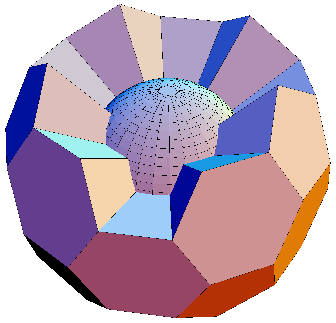

Version 2.21: 12 June 2020
This material may be excerpted, quoted, or distributed freely provided that attribution to the author (Carey Sublette), the document name (Nuclear Weapons Frequently Asked Questions) and this copyright notice is clearly preserved, and the URL of this website is included: Nuclear Weapon Archive
Only authorized host sites may make this document publicly available on the Internet through the World Wide Web, anonymous FTP, or other means.
Unauthorized host sites are expressly forbidden.
The only authorized host site for the NWFAQ in English is the Nuclear Weapon Archive (nuclearweaponarchive)
Back to Main IndexThis section describes the first fission and fusion bombs that were developed and tested. The purpose is three-fold. First, these devices are of considerable historical and public interest, the "first" of anything garners special attention. Second, these devices serve as archetypal examples of basic designs, and more information is available about these devices than later ones. Third, the effort and technology that was required to develop these devices provide indications of how easily primitive nuclear weapons can be developed by others.
This subsection describes the three atomic bombs, which were constructed and detonated in 1945.
The design of the Gadget and Fat Man devices are discussed together since they are basically the same. Gadget was an experimental test version of the implosion system used in Fat Man and were identical in all but a couple of details. A test of the implosion bomb was considered essential due to the newness of the explosive wave shaping technology, and the complexity of the system.
Although the data given below is based on the US made Gadget/Fat Man, it also applies to a large extent to the first Soviet atomic bomb, code named RDS-1 (ReakTivnyi Dvigatel Stalina; Stalin's Rocket Engine) by the Soviet Union and designated Joe-1 by US intelligence. This is because detailed descriptions of the design were given to Soviet intelligence by spies who worked at Los Alamos; and Lavrenti Beria, who was the Communist Party official heading the project, insisted that the first bomb copy the proven American design as closely as possible. The information the Soviets recieved were not complete specifications of the final design, and in particular lacked precise measurements, so even an attempt to make an exact replica would inevitably vary in exact dimensions and other respects.
The two key spies at Los Alamos were Theodore Alvin ("Ted") Hall and Klaus Fuchs. Hall was involved in certain aspects of the experimental work involved with the implosion experiments and was the first source to provide the Soviets with information about the implosion concept, while it was in preliminary development, in the fall of 1944. The detailed design information about the bomb was provided by Fuchs who actually had a key role in its development. Significant information about lens manufacture was also passed on by David Greenglass, but this was mostly or entirely redundant with the Hall and Fuchs information. In the early 90s KGB/RFIS officials dissiminated an account of an unidentified scientist-spy code named "Perseus", but this has since been determined to be a fictional composite.
A fairly complete description of Gadget's design emerged into the public domain over a span of 45 years, from 1950 to 1995, mostly as an indirect result of Soviet espionage. The Rosenberg trial resulted in a first description of the implosion process and explosive lens design due to the release of testimony provided by David Greenglass and Klaus Fuchs. The very detailed information provided by Klaus Fuchs emerged after the collapse of the Soviet Union. Many additional FBI records relating to the Fuchs and Rosenberg investigations have recently been released in recent years also. But having access to this information it is now clear that the detailed specifications for the nuclear component of Gadget was published by the U.S. in 1964 in a Los Alamos report LA-3067. This report summarizing measurements of critical systems includes data about Gadget, though not identified as such. Once the description of Gadget emerged from Soviet archives though, it is immediately obvious what it is. The Gadget experiment is the second from the bottom.
The experiment listed at the bottom appears to be the one being performed by Harry Daghlian on 21 August 1945 in which a fatal criticality accident occurred. The table shows the change in plutonium composition being produced by the Hanford reactors between the first batch prepared for the Trinity test (Gadget), when the pressure was on to get the first two bomb cores produced as quickly as possible and thus very short irradiation times were used, and later production with longer irradiation times. The Pu-240 content of the first core was 1.0%, but the core produced later in August, which Daghlian was testing, had 1.35%.
The intelligence based descriptions of the Gadget and Fat Man suffered somewhat from the fact that they actually recounted different stages of design evolution, not the specifications of the actual devices exploded at Trinity and Nagasaki. Since 1995 more specific information about the actual Gadget and Fat Man designs has been uncovered and published through the efforts of John Coster-Mullen, who has assembled a great deal of data through interviews, field investigations, archive searches and FOIA requests. Coster-Mullen's work is available in the form of his self-published book: Atom Bombs: The Top Secret Inside Story of Little Boy and Fat Man.
|
|
|||||||||||||||||||||||||||||||||||||||||
|---|---|---|---|---|---|---|---|---|---|---|---|---|---|---|---|---|---|---|---|---|---|---|---|---|---|---|---|---|---|---|---|---|---|---|---|---|---|---|---|---|---|
|  |
|
||||||||||||||||||||||||||||||||||||||||
| Scale drawing of Fat Man (click for large image). | |||||||||||||||||||||||||||||||||||||||||
| implosion bomb lens system"> |
|
Cut-away view showing the implosion bomb lens block arrangement. Lens and booster blocks are combined in this diagram. Click for large image. |
8.1.1.1 The Pit Assembly
The heart of the pit assembly was the plutonium core whose fission in its compressed state would release the explosive energy of the bomb. The core contained 6.15 kg of a delta-phase plutonium-gallium alloy coated with 0.005" of nickel (this is given in LA-3067, H. C. Paxton, "Los Alamos Critical Mass Data", 1964, p. 45, though not identified as such). The core was a 9.17 cm sphere, solid except for a 2.1 cm cavity in the center for the 2 cm neutron initiator. The solid design was a conservative one suggested by Robert Christy to minimize asymmetry and instability problems during implosion. The sphere had a 2.1 cm hole and plutonium plug to allow initiator insertion after assembly of the sphere.
The plutonium was produced by the nuclear reactors at Hanford, Washington; although it is possible that about 200 g of plutonium produced by the experimental X-Reactor at Oak Ridge was also used in the first core. Wartime production meant that the plutonium had to be separated as quickly as feasible after being bred in the reactor. Due to the very short irradiation periods used, about 150 days, this was super-grade weapon plutonium containing only 1.0% Pu-240.
The plutonium was stabilized in the low density delta phase (density 15.6) by alloying it with 3.35% gallium (by molar content, 1.00% by weight), but was otherwise of high purity. The weapon design at the start of 1945 called for the use of pure plutonium in the alpha phase, its densest phase and the phase that is stable at room temperature. At that time knowledge of plutonium phase behavior and alloys were slight, and using plutonium with no diluents and in its densest phase favored the most efficient explosion possible.
But as increasing quantities of plutonium came available for metallurgists to work with problems with making using castings of alpha plutonium became apparent. Hot pressing 0.9 inch (2.29 cm) hemispheres, weighing 60 g, had been successful in April, but attempts to repeat this in May with 2 inch (5.08 cm) hemispheres, weighing 650 g, failed. The pressings warped and split due to the phase change that occurred, much of it after the metal had cooled. Fortunately for the program, a suitable alloy that stabilized the low density delta phase had already been developed.
The previous summer, after the plutonium crisis had struck Los Alamos, the theoretical division had calculated the tolerance for diluent atoms in plutonium, that is, the concentration of non-plutonium atoms that would not significantly affect the explosion efficiency. This level was set at 5% (molar). In February 1945, the metallurgists identified two alloying elements that stabilized the metal's delta phase -- silicon and aluminum. Further work found that only aluminum produced alloys with satisfactory stability, and suitable ones with an aluminum content ranging from 1% to 4% were tested.
In early March new tolerances for various light element impurities were calculated based on the production of neutrons from the "alpha, n" reaction. The levels were quite conservative, although the Pu-240 had imposed neutron backgrounds some 620 times higher than originally expected, the light element neutron background was allowed to rise only 62 times, so that it would not be a significant contributor to the neutron emission. It was soon noticed that these limits set the maximum content of aluminum at 0.5% (molar), making the only candidate delta-stable alloy unacceptable. Tests were soon made with aluminum's next heaviest chemically similar neighbor, gallium. In April the 3% gallium alloy was developed and tested and thus offered a ready solution to the plutonium fabrication problem.
Switching to the low density delta phase alloy had other benefits. The higher critical mass of the lower density metal required the use of more plutonium, but it also allowed the use of more plutonium. The more plutonium used in the bomb, the bigger the explosion due both to the direct increase in fuel mass and an increase in efficiency. Serendipitously the expected drawback of using lower density metal, a less efficient reaction, did not materialize. Even stabilized, the delta phase collapsed quite easily so that during implosion the plutonium would compress to the same density as would a pure plutonium alpha phase core.
Another advantage of the alloy was that the stabilization eliminated any possibility of phase transition expansion due to inadvertent overheating of the core after manufacture, a real risk for the self-heating plutonium, which would distort and ruin it for weapon use. A final advantage was that the alloy proved relatively corrosion resistant, undergoing corrosion at only 4% the rate of pure plutonium. This alloy has remained in use in subsequent nuclear weapons down to the present day.
The bomb cores were formed in two hemispheres by hot pressing an ingot of the proper weight in steel dies. The alloy proved easy to press-form at 400 ºC and 30,000 psi (200 MPa).
Since plutonium is a chemically very reactive metal, as well as a significant health hazard, each half-sphere was plated with an inert metal to protect it. The initial technique used was electroplating silver to form a layer 0.005 inches (0.13 mm) thick. This protection method was used for the Gadget core, but created a problem. Hasty preparation had left plating solution trapped under the silver, resulting in blistering that ruined the corrosion protection and the fit. Careful grinding and layering with gold leaf restored the necessary smooth surface. However a thin gold gasket (about 0.1 mm thick) between the hemispheres was a necessary feature of the design in any case to prevent premature penetration of shock wave jets between the hemispheres that could have prematurely activated the initiator.
After Trinity, two changes were made in bomb core fabrication. Silver plating was replaced by a new process that coated the plutonium with a much tougher and more effective protective layer of nickel. The plutonium was exposed to an atmosphere of a nickel carbonyl, which reacted with the plutonium to deposit a film of nickel. This coating technique would remain in use at least through the 1950s at Rocky Flats. Later cores also had a design change that eliminated the need for the gold gasket. This possibly involved changing the mating surfaces of the hemispheres from being flat to having some sort of step or bevel to block shock wave jets.
In the center of core was a 2.5 cm cavity that held the neutron initiator. The initiator used was called the "Urchin" or "screwball" design. It was a sphere consisting of a hollow beryllium shell, with a solid beryllium pellet inside, the whole initiator weighing about 7 grams. The outer shell was 2 cm wide and 0.6 cm thick, the solid inner sphere was 0.8 cm wide. The Urchin had 15 concentric latitudinal grooves cut into the inner surface of the shell. Each groove was wedge-shaped and 2.09 mm deep. Like the plutonium core, the shell was formed in two halves by hot pressing in a nickel carbonyl atmosphere. The surfaces of the shell and central sphere were coated by a layer of nickel, and then plated with 0.1 mm of gold. 50 curies of polonium-210 (11 mg) were deposited on the grooves inside the shell and on the central sphere. The gold and nickel layers protected the beryllium from alpha particles emitted by the polonium and surrounding plutonium. The Urchin was attached to a mounting bracket inside the core’s central cavity.
The Urchin was activated by the arrival of the implosion shock wave at the center of the core. When the shock wave reached the walls of the cavity, they vaporized and the plutonium gas shock wave then struck the initiator, collapsing the grooves and creating Munroe-effect jets that rapidly mixed the polonium and beryllium of the inner and outer spheres together. The alpha particles emitted by the Po-210 then struck beryllium atoms, periodically knocking loose neutrons, perhaps one every 5-10 nanoseconds.
Surrounding the core was a natural uranium tamper weighing 108 kg, with a diameter of 9 inches (22.225 cm). The tamper formed a 6.56 cm thick layer around the core; together the core and tamper formed the "pit assembly." The thickness of the tamper layer was determined by neutron conservation considerations, since a few centimeters are sufficient to provide effective inertial confinement. Thicker natural uranium reflectors (exceeding 10 cm) provide significant additional savings to ordinary critical assemblies, but the "time absorption" effect inherent to fast exponential chain reactions reduced the benefits of a thicker reflector. About 20% of the bomb yield was from fast fission of this tamper.
With the neutron reflection provided by the tamper the plutonium core was about 78% of a critical mass before implosion. An additional margin of safety was provided by the use of a cadmium wire in the pit before initiator insertion. When compressed by the implosion to over twice its original density the pit became an assembly of some 3 to 4 critical masses.
On the outside surface of the tamper was another measure to improve weapon reliability -- a brown one-eighth inch thick (0.32 cm) layer of neutron-absorbing enriched boron-10 bonded with acrylic thermoplastic. This feature reduced the neutron background in the core. The very fast spontaneous fission neutrons originating in the pit assembly had a very short residence time. They would quickly either be captured in the pit assembly, or escape from it, but upon doing so they would encounter the thick hydrogen-rich explosive layer which would act as an effective moderator and neutron reflector. The strongly absorbing boron captured these slow neutrons before they could be scattered back into the pit assembly where they would then persist for a relatively long time.
8.1.1.2 The Implosion Assembly
The implosion assembly comprised three layers: the outermost explosive lens layer which created the converging implosion shock wave, an inner booster explosive layer that strengthened the converging wave, and an aluminum sphere called the "pusher" which further enhanced the implosion wave. Every aspect of the implosion assembly had to conform to high standards of precision to ensure a highly symmetric implosion wave, no more than a 5% variation was tolerable.
The entire high explosive implosion system, made up of the lens and booster layers, was 17.875 inches (45.4 cm) thick. These layers each consisted of 32 explosive blocks (20 hexagonal and 12 pentagonal blocks) which fitted together in the same pattern as a soccer ball (see Figures 3-7 and 3-8 in Section 3.2.3.1.1 Implosion Assembly). The complete spherical explosive assembly was 54.25 inches (137.8 cm) wide and weighed 5300 lb (2400 kg).
Each lens block had two components: the body made of high velocity explosive, and a parabolic low velocity explosive focusing element on the inner surface. These pieces formed the lens that shaped a convex, expanding shock wave into a convex converging one (see Figure 3-6). Each lens block was 9 inches (22.9 cm) thick. The hexagonal lens blocks each weighed about 145 lb (66 kg), each pentagonal block about 95 lb (43 kg). The complete lens layer weighed about 4000 lb (1800 kg).
The lenses were made by precision casting which required explosive mixtures that could be safely melted. The high velocity explosive was composition B ("Comp B"), a mixture of 60% RDX - a very high velocity but unmeltable explosive, and 39% TNT - a good explosive that melts easily (m.p. 80.35 °C) , and 1% wax as a binder. The slower explosive was baratol, it is a mixture of TNT and barium nitrate of variable composition (TNT is typically 25-33% of the mixture) with 1% wax. The high density of barium nitrate gives baratol a density of at least 2.5.
The inner layer of explosive blocks had a thickness of 8 7/8 inches (22.5 cm) thick. The hexagonal blocks each weighed 47 lb (19 kg), each pentagonal one was 31 lb (14 kg) for a total mass of about 1300 lb (590 kg).
The entire explosive assembly had to be made to very precise tolerances. The composition and densities of the explosives had to be accurately controlled and extremely uniform. The pieces had to fit together with an accuracy of one-thirty second of an inch (0.8 mm) to prevent irregularities in the shock wave. Accurate alignment of the lens surfaces was even more important than a close fit. A great deal of tissue and blotting paper and adhesive tape was also used to make everything fit snugly together with no air gaps.
To achieve the most precise detonation synchronization possible, conventional detonators, which consisted of an electrically heated wire, and a sequence of primary and secondary explosives were not used. Instead newly invented exploding wire detonators were used. This detonator consists of a thin wire that is explosively vaporized by a surge of current generated by a powerful capacitor. The shock wave of the exploding wire initiates the secondary explosive of the detonator (PETN). The discharge of the capacitor, and the generation of initiating shock waves by the exploding wires can be synchronized to ±10 nanoseconds. A disadvantage of this system is that large batteries, a high voltage power supply, and a very powerful capacitor bank were needed to explode all 64 detonators (they used redundant detonators and cabling for each lens) simultaneously; a cascade of spark gap switches was used to trigger the discharge of the capacitor bank. Known as the X-Unit, this system weighed 400 lb (180 kg) and was one of the most difficult components to qualify in time for the second atomic attack.
Surrounding the tamper and boron-plastic layer was a 4 3/4 inch (12.0 cm) thick aluminum sphere weighing 130 kg, called the "pusher," replacing a similar thickness of high explosive. This layer of inert higher density material (a density ratio of 1.64) improved the implosion wave in a number of ways. Upon encountering the higher density layer the shock wave slows, which tends to reduce the size of irregularities that have developed, and creates a partial shock reflection of increased pressure that propagates outward. This strengthens the implosion wave, and reduces the drop in pressure than tends occurs behind the shock front, both of which contribute to enhancing the compression of the core. At this smaller radius the effect of implosion convergence had concentrated the shock wave energy to the point that the explosive that was replaced no longer contributed significant amounts of energy to it in any case.
8.1.1.3 The Explosive Sphere Casing
The development of the casing that held the explosive sphere together progressed independently from the work on the design of the implosion system itself -- it was taken for granted that whatever the final design it would be high explosive sphere sized to fit the 59 inch case. A complex early design designated the "1222" model involved 12 pentagonal sections of the aluminum alloy duraluminum (dural), inside an icosahedral steel shell, the assembly of which required 1500 bolts. This was abandoned in the summer of 1944 in favor of a much simpler system, the "1561" model. This consisted of a spherical shell made up of two polar caps and five equatorial segments of machined dural castings, which required only 90 bolts for assembly. The overall thickness of the aluminum was 1 inch. This sphere was enveloped by an ellipsoidal shell of steel attached at the equator, with the tail bolted to the ellipsoid. The electrical detonating and fusing equipment was mounted on the sphere in the space between the sphere and the outer ellipsoid.
A layer of one-half inch thick cork lined the inside of the aluminum sphere and cushioned and compressed the explosive sphere, holding the whole implosion system together. The outermost steel shell had a thickness of three-eighths of an inch. It was intended to be heat-treated steel armor plate but warping during the heat treatment process caused replacement with a case of ordinary steel.
Both the implosion bomb prototype Gadget, and the combat Fat Man bomb, were assembled on the site from separate pieces. The explosive sphere was built up from separate explosive blocks, the tamper and pusher spheres were lowered in by a small crane, and the pieces of the dural shell was bolted together. Due to the complexity of the weapon, this was a process that took at least two days (including checkout procedures).
The final bomb design, after Fat Man, allowed "trap door" assembly. The entire bomb was assembled ahead of time, except for the pit assembly. To complete the bomb, one of the domed caps was removed, along with one of the explosive lenses and inner explosive blocks. The initiator was inserted between the plutonium hemispheres, and the assembled pit was inserted in a 40 kg uranium cylinder that slid into the tamper to make the complete core. The explosive block and lens were replaced, its detonator wires attached, and the cap bolted back into place.
Safety was a serious problem for Fat Man, though in a comparison of worst case accidents, not as serious a problem as it was for Little Boy. The critical mass of the uranium reflected core in the delta phase was 6.46 kg, but only 4.45 kg in the alpha phase. Any accidental detonation of the high explosive (in a fire or plane crash for example) would be certain to collapse the 6.15 kg delta phase core to the supercritical alpha phase state. The expected yield from the explosion would range from on the order of tens of tons, roughly a factor of ten higher than the energy of the high explosive itself, to perhaps as high as hundreds of tons. The main hazard would be from neutron (primarily) and gamma radiation however, which would be deadly well outside the main area of blast effects. A 20 ton explosion would produce a lethal 640 cSv prompt radiation exposure 250 m from the bomb!
The test of the first atomic explosion in history was conducted at the Jornada del Muerto trail (Journey of Death) at the Alamagordo Bombing Range in New Mexico at 33 deg. 40' 31" North latitude, 106 deg. 28' 29" West longitude (33.675 deg. N, 106.475 deg W). The device was called Gadget, the whole test operation was code-named TRINITY.
Gadget was a 150 cm sphere consisting of the basic explosive assembly described above with its dural shell, the firing electronics and equipment were mounted externally on the test platform which was atop a 100 foot steel tower, giving Gadget an elevation of 4624 ft above sea level.
The assembly of Gadget took five days and began on July 11, 1945. By July 13, the assembly of Gadget's explosive lens, uranium reflector, and plutonium core were completed at Ground Zero. On July 14, Gadget was hoisted to the top of the 100 foot test tower, and the detonators were connected, after which final test preparations began. On July 16, 1945, 5:29:45 a.m. (Mountain War Time) Gadget was detonated. The explosive yield was 20-22 kT (by latest estimates), vaporizing the steel tower. Since the bomb was exploded above the ground it produced only a very shallow crater (mainly created by compression of the soil) - 2 meters deep with an 80 m radius. The crater was surrounded by fused (melted) sand dubbed "trinitite" (or "atomsite"). The exact yield was originally placed at 18.6 kT on the basis of radiochemical tests. Since the projected yield was only 5-10 kT, many of the experiments were damaged or destroyed by the test and failed to yield useful (or any) data.
Gadget was exploded close enough to the ground that considerable local fallout was generated (along with significant induced radioactivity at ground zero from the emitted neutrons). The most intense induced radiation was in an irregular circle, about 10 m in radius around ground zero. The cloud rose to 11,000 m. The wind was blowing to the northeast, but significant fallout did not descend for about 20 km downwind.
The heaviest fallout was detected about 20 miles northeast of ground zero. In this area radiation levels recorded along U.S. Highway 380 for a distance of ten miles reached "approximately 50 R total." Also in this area was a site dubbed "Hot Canyon". The canyon was 5 miles east of the town of Bingham, 1.1 miles east of a road junction. This is a summary of radiation levels:
15.0 R/hr at 0300 hours after zero 14.0 R/hr at 0330 hours 6.0 R/hr at 0830 hours 0.6 R/hr at 3600 hours
The total exposure as this site was 212-230 R.
Some evacuations were conducted the path of the fallout plume out to 30 km. At Bingham, New Mexico gamma intensities of 1.5 R/hr were recorded between 2 and 4 hours after the test. South of Bingham readings reached 15 R/hr, but declined to 3.8 R/hr 5 hours after the detonation, and had decreased to less than 0.032 R/hr one month later.
0.9 miles east of "Hot Canyon", was a house containing the Raitliff family, consisting of two adults and a child. Levels at this location were "0.4 R/hr at 3600 hours after zero and after a rain. Accumulated total dose 57-60 R." Also nearby was another house with a couple named Wilson. None of these people were evacuated.
Radiation (beta) burns were later observed on cattle in the general vicinity of the test. The main fallout pattern extended about 160 km from ground zero, and was about 50 km wide.
The design of Little Boy was completely different from Gadget/Fat Man. It used the gun assembly method that had originally been proposed for the plutonium bomb. The development of the uranium gun weapon was somewhat erratic. Early design and experimental work directed towards developing a gun system for uranium assembly was conducted during the summer and fall of 1943, after Los Alamos began operating. It was soon discontinued as attention shifted to the technically more demanding plutonium gun. It was felt that once the plutonium gun was successfully developed, the uranium gun would be almost an afterthought since the necessary speed of assembly was much lower.
When the very high neutron emission rate of reactor-produced plutonium was discovered in April-July 1944, the gun method was abandoned for plutonium and serious attention returned to the uranium gun. The uranium gun program (the O-1 group of the Ordnance Division) was lead by A. Francis Birch. He faced an odd combination of considerations in directing the work. The system was straightforward to develop, and sufficient U-235 to build the bomb obviously wouldn't be available until mid 1945, if then. Birch was nonetheless under a great deal of pressure to complete development as quickly as possible so that all of the laboratory's assets could be directed to the risky implosion bomb. Furthermore since the feasibility of the plutonium bomb was now in doubt, he had to make absolutely sure that the uranium bomb would work. Thus although it was a comparatively easy project technically, it still required extraordinary attention to detail.Thus despite being straightforward technically, the program still required extraordinary attention to detail. The design arrived at was a very conservative one, the principle risk was whether the fuzing system with trigger the bomb at the appropriate time.
Three 6.5 inch (165 mm) smooth-bore gun tubes with 2 inch (5.08 cm) thick walls and designed for a maximum pressure of 40,000 psi (2700 bar) were ordered in March 1944 and received in October. Proof firings, consisting of firing a 200 lb (90 kg) projectile at 1000 ft/sec (300 m/sec) two or three times from each tube, were conducted in December. To hold weight down the tubes were not designed for many repeated firings, unlike conventional artillery.
The gun tubes were 6 feet (1.8 m) long and weighed about 1000 pounds (450 kg), little more than ten percent of the final bomb weight. Far more massive, weighing in at over 5000 pounds (2300 kg), was the high alloy steel case forging that held the target assembly. The target case, measuring 28 inches (71 cm) wide and 36 inches (91 cm) long and was screwed on to the end of barrel (lest recoil from the gun’s firing pull them apart) and had to absorb the full momentum of the projectile and bring it to rest without cracking or deforming. The target case that was used in Little Boy was the first one ever made, which surprisingly had proved also to be the best ever made. It had been used in four proof-test firings without damage before its use in combat.
Inside the target case was a cavity that held the cylindrical tungsten carbide tamper, 13 inches (33 cm) wide and long and weighing 680 pounds (310 kg). The tamper acted as a neutron reflector, increasing the effective the number of critical masses in the uranium core and, with a density of 14.8, it also served as an inertial tamper to hold the core together as long as possible to increase the explosive yield. When fully assembled, the uranium core resided in a 6.5 inch wide (16.5 cm) cylindrical cavity, surrounded by a 3.25 (8.255 cm) inch thick layer of tungsten carbide.
The choice of tungsten carbide as a tamper, instead of the natural uranium used in Fat Man, was dictated by the need to keep neutrons out of the assembly. U-238 undergoes spontaneous fission 100 times more frequently than U-235, and a piece large enough to be useful as a tamper (200 kg) would generate 3400 neutrons a second - too many for gun assembly to be feasible.
The enriched uranium core, weighing 64.15 kg fully assembled, was divided 40/60 between the target insert (25.6 kg) and the hollow core in the projectile (38.53 kg). The hollow core was slightly less than 6.5 inches wide (16.5 cm) and 7 inches long (17.8 cm). It was fabricated as a stack of nine rings of varying thickness with a 4 inch (10.2 cm) inside diameter. The target insert was a cylinder 4 inches (10.2 cm) wide and 7 inches long (17.8 cm) also made up of a stack of rings. The six target insert rings had a 1 inch inside diameter to accommodate a rod that held the stack together.
With an enrichment of around 80% the spontaneous fission rate in the 64 kg of uranium amounted to 79 fissions/second, only one sixth of the limit previously established for Thin Man. The assembly velocity was reduced to one third of requirement for the plutonium gun, and even with the larger uranium core (which gave a greater assembly distance) the chance of predetonation was still significantly reduced. Since the mass of a gun varies with the square of its velocity to the one third reduction in velocity allowed a potential decrease in gun mass to only one ninth of the original design. In fact the mass of the final gun was greater than this, providing an increased margin of reliability.
Both the target insert and uranium projectile were backed by disks of tungsten carbide reflector 6.5 inches wide and 3.25 inches thick The projectile consisted of the uranium core and carbide reflector disk packed in a steel sheet can with a wall thickness of 0.0625 inches (1.59 mm) thick, along with the 6 inch (15.2 cm) long steel projectile body. The projectile body was equipped with brass bands to provide the gas-tight seal with the smooth-bore barrel. The complete weight of the projectile was 190 pounds (86 kg).
When the projectile united with insert, the impact drove the assembled core and the tungsten carbide disk backing the target against a malleable steel disk, the “anvil”, mounted inside the target case. It was the anvil’s job to deform, spreading out like a pancake, thus cushioning the impact and absorbing the bulk of the projectile’s kinetic energy; its momentum was absorbed by the massive target case. The engineering design of the complete bomb, designated Model 1850, was complete by February 1945, only preparations for field use were required after that. The actual bomb was ready for combat use by early May 1945 - except for the U-235 core which waited on deliveries of enriched uranium.
The complete weapon was 28 inches in diameter, 126 inches long and weighed 8900 lb. The target case and tamper, and the gun barrel, accounted for nearly all of Little Boy’s length and three quarters of its weight. Most of the remaining weight was in the steel plates that stretched back from where they joined the target case to form the hollow bomb body. A 1 inch (2.54 cm) thick, 27.25 inch wide (69.2 cm) steel bulkhead disk slid over the rear of the gun barrel to create the aft end of the bomb body, five steel plates were bolted between the bulkhead and target case to form a compartment around the barrel. Inside this compartment was the fuzing system – the electrical and mechanical components required to detonate the bomb.
Little Boy used the same air burst detonator system as Fat Man (see below). Essentially all the enriched uranium on hand was used to fabricate the weapon core. Since deliveries had taken place over about a seven month period, with varying degrees of enrichment, the material varied in quality. It was important to place the most highly enriched material in the center of the core, where the neutron flux would be highest, so the target insert was fabricated last using the latest and most highly enriched shipments. The insert was completed on 24 July, the projectile having been cast in pieces from 15 June to 3 July. The insert had an enrichment of 86%, the projectile was enriched to 82% for an average enrichment for the core of 83.5%, equal to slightly more than three critical masses.
At the bottom of the core cavity one or more beryllium/polonium ABNER initiators (different from the implosion initiators; simpler in design, with less polonium) could be mounted. Even if the neutron initiator failed to work, the bomb would have exploded from spontaneous fission in a fraction of a second. The decision to include initiators in the final weapon wasn’t finalized by Oppenheimer until 15 March 1945. In the end four initiators out of a batch of 16 shipped to Tinian were used in Little Boy. These were fastened radially around the target assembly.
Little Boy was a terribly unsafe weapon design. Once the propellant was loaded, anything that ignited it would cause a full yield explosion. For this reason “Deke” Parsons, acting as weaponeer, decided to place the cordite in the gun after take-off in case a crash and fire occurred. The projectile, once rammed into the barrel, required several tens of thousands of pounds of force to drive forward from its seat. While it is unlikely that even a violent crash would provide the necessary acceleration, an accidental drop from above 15,000 feet would have done so, causing anything from a fizzle (a few tons yield) to a full yield explosion. Little Boy also presented a hazard if it fell into water. Since it contained nearly three critical masses with only air space separating them, water entering the weapon would have acted as a moderator, possibly making the weapon critical. A high yield explosion would not have occurred, but a rapid melt-down or explosive fizzle and possible violent dispersal of radioactive material could have resulted.
The complete weapon was 126 inches long, was 28 inches in diameter and weighed 8900 lb. Little Boy used the same air burst detonator system as Fat Man (see below).
No other weapon of this design was ever detonated. Only five other Little Boy units were built, but no others entered the US arsenal. It appears that not even one additional complete set of components required to assemble a combat-ready weapon were ever procured.
The first U-235 projectile component was completed at Los Alamos on June 15, 1945. Casting of the U-235 projectile for Little Boy was completed on July 3. On July 14 Little Boy bomb units, accompanied by the U-235 projectile, were shipped out of San Francisco. They were picked up by the USS Indianapolis (CA-35) at the U.S. Navy's Hunter's Point shipyard at San Francisco on July 16, bound for Tinian Island in the Mariana Islands. On July 24 the last component for Little Boy, the U-235 target insert, was completed and was tested the next day. The Indianapolis delivered Little Boy bomb units, and the U-235 projectile to Tinian on July 26. On the same day the target assembly, divided into three parts flew out of Kirtland Air Force Base, Albuquerque on three C-54 transport planes, which arrived July 28 at Tinian.
Bomb unit L11 was selected for combat use and on July 31 the U-235 projectile and target were installed, along with 4 initiators - making Little Boy ready for use the next day. An approaching typhoon required postponing the planned attack of Hiroshima on Aug. 1. Several days are required for weather to clear, and on Aug. 4 the date was set for 2 days later. On August 5 Tibbets named B-29 No. 82 the "Enola Gay" after his mother, over the objections of its pilot Robert Lewis. Little Boy was loaded on the plane the same day.
August 6, 1945 -
* 0000, final briefing, the target of choice is Hiroshima. Tibbets is pilot, Lewis is co-pilot.
* 0245, Enola Gay begins takeoff roll.
* 0730, the bomb is armed.
* 0850, Flying at 31,000 ft Enola Gay crosses Shikoku due east of Hiroshima.
* Bombing conditions are good, the aimpoint is easily visible, no opposition is encountered.
* 0916:02 (8:16:02 Hiroshima time) Little Boy explodes at an altitude of 1968 feet (600 m), 550 feet from the aim point, the Aioi Bridge.
Due partly from the absence of any instrumented test with this weapon design, the yield of this explosion has been subject to a wide range of estimates over the years, ranging from a low of 12.5 kT up to 18 kT. The most thorough analyses have typically placed the yield at 15 to 16 kT. Finally a definitive determination was arrived at in 2002, after nearly 60 years of investigation, from a meticulous study of the radiation field produced by the bomb. The revised burst altitude is 20 meters higher that previously believed, and is now precisely 600 meters. The yield of the explosion is now confirmed at 16 kT.
The yield of Little Boy had been predicted before delivery at 13.4 kT, and the burst height was set at 1850 ft (564 m). For inflicting essentially complete destruction on a city a blast pressure of 5 psi is sufficient, by this criterion this burst height setting was optimal for a weapon yield of only 5 kt, a measure of the uncertainty and conservatism of the Manhattan Project leaders since setting the burst height too high would lead to a rapid drop-off in weapon effectiveness. With its higher actual yield and burst height the explosion was optimum for a blast pressure of about 12 psi (i.e. it maximized the area subjected to a blast pressure of 12 psi or greater). The burst height was sufficient to prevent any significant fallout over Japan.
The combat configuration for the implosion bomb (the Model 1561) basically consisted of the Gadget device encapsulated in a steel armor egg. The two steel half-ellipsoids were bolted to the dural equatorial band of the explosive assembly, with the necessary X-Unit, batteries, and fuzing and firing electronics located in the front and aft shell. For use in combat, each Fat Man bomb required assembly almost from scratch - a demanding and time consuming job. Assembly of a Fat Man bomb was (and may still be) the most complex field preparation operation for any weapon ever made.
Like Little Boy, Fat Man was fuzed by four radar units called "Archies", the antennas for which were mounted on the tail of the bomb. Developed originally as fighter tail warning systems, these units measured the bomb's height above the ground and were set to detonate at a pre-calculated altitude (set to 1850 ft, +/- 100 ft). A barometric switch acted as a "fail-safe", preventing detonation until the bomb had fallen below 7000'.
Fat Man was 60 inches in diameter, was 12 feet long, and weighed 10,300 lb.
The Fat Man plutonium core, and its initiator, left Kirtland Air Force Base, for Tinian Island on July 26, 1945 in a C-54 transport plane. It arrived on Tinian on July 28. Also on July 28, three specially-modified B-29s flew from Kirtland Field carrying three Fat Man bomb assemblies, including units F-31 and F-32, each encased in an outer ballistic shell. These arrived at Tinian on August 2, the first Fat Man units to do so. The bombing date was set for August 11 at this time, with Kokura as the target. Assembly of practice (non-nuclear) weapons began shortly afterward, with the first completed bomb (Fat Man unit F33) ready on Aug. 5. On August 7 a forecast of 5 days of bad weather around the 11th moved the bombing date up to August 10, then to August 9. This compressed the bomb assembly schedule so much that many check-out procedures had to be skipped during assembly. On August 8 the assembly of Fat Man unit F31, with the plutonium core, was completed in the early morning. At 2200, Fat Man was loaded on the B-29 "Bock's Car".
August 9, 1945 -
* 0347, Bock's Car takes off from Tinian, the target of choice is Kokura Arsenal. Charles Sweeney is pilot. Soon after takeoff he discovers that the fuel system will not pump from the 600 gallon reserve tank.
* 1044, Bock's Car arrives at Kokura but finds it covered by haze, the aimpoint cannot be seen. Flak and fighters appear, forcing the plane to stop searching. Sweeney turns toward Nagasaki, the only secondary target in range.
* Upon arriving at Nagasaki, Bock's Car has enough fuel for only one pass over the city even with an emergency landing at Okinawa. Nagasaki is covered with clouds, but one gap allows a drop several miles from the intended aimpoint.
* 11:02 (Nagasaki time) Fat Man explodes at 1650 +/- 33 feet (503 m) near the perimeter of the city with a yield of 22+/-2 kT. Due to the hilly terrain around ground zero, five shock waves were felt in the aircraft (the initial shock, and four reflections).
Although Fat Man fell on the border of an uninhabited area, the eventual casualties still exceeded 70,000. Also ground zero turned out to be the Mitsubishi Arms Manufacturing Plant, the major military target in Nagasaki. It was utterly destroyed.
The 1987 reassessment of the Japanese bombings placed the yield at 21 kT. At the extreme estimate ranges for Little Boy and Fat Man (low for Little Boy, high for Fat Man), a ratio of nearly 2-to-1 has been implied. The 1987 best estimate figures make Fat Man only about 40% larger than Little Boy (and possibly as little as 15% more).
Using the 21 kT figure, the optimal burst height for Fat Man would have been about 3100 feet. The actual burst height was optimal for 15 psi overpressure The burst height was sufficient to prevent any fallout over Japan.
The date that a third weapon could have been used against Japan was no later than August 20. The core was prepared by August 13, and Fat Man assemblies were already on Tinian Island. It would have required less than a week to ship the core and prepare a bomb for combat.
By mid 1945 the production of atomic weapons was a problem for industrial engineering rather than scientific research, although scientific work continued - primarily toward improving the bomb designs.
The three reactors (B and D which went started up for production in December 1944, and F which started up February 1945) at Hanford had a combined design thermal output of 750 megawatts and were theoretically capable of producing 19.4 kg of plutonium a month (6.5 kg/reactor), enough for over 3 Fat Man bombs. Monthly or annual production figures are unavailable for 1945 and 1946, but by the end of FY 1947 (30 June 1947) 493 kg of plutonium had been produced. Neglecting the startup month of each reactor, this indicates an average plutonium production 5.6 kg/reactor even though they were operated at reduced power or even shut down intermittently beginning in 1946.
Enriched uranium production is more difficult to summarize since there were three different enrichment processes in use that had interconnected production. The Y-12 plant calutrons also had reached maximum output early in 1945, but the amount of weapon-grade uranium this translates into varies depending on the enrichment of the feedstock. Initially this was natural uranium giving a production of weapon-grade uranium of some 6 kg/month. But soon the S-50 thermal diffusion plant began feeding 0.89% enriched uranium, followed by 1.1% enriched feed from the K-25 gaseous diffusion plant. The established production process was then: thermal diffusion (to 0.89%) -> gaseous diffusion (to 1.1%) -> alpha calutron (to 20%) -> beta calutron (up to 89%). Of these three plants, the K-25 plant had by far the greatest separation capacity and as it progressively came on line throughout 1945 the importance of the other plants decreased. When enough stages had been added to K-25 to allow 20% enrichment, the alpha calutrons were slated to be shut down even if the war continued.
After Japan's surrender in August 1945, S-50 was shut down; the alpha calutrons followed in September. But K-25 was complete on August 15, and these shutdowns would have occurred in any case. At this point gaseous diffusion was incapable of producing weapon grade uranium, a planned "top plant" had been cancelled in favor of more beta calutrons. An expansion of K-25, called K-27, to produce a larger flow of 20% enriched feed was under construction and due to go in full operation by 1 February 1946. In October production had increased to 32 kg of U-235 per month.
In November and December additional beta tracks went on line, and the percentage of downtime for all beta tracks fell, boosting production further. Between October 1945 and June 1946, these improvements led to a 117% increase in output at Oak Ridge, to about 69 kg of U-235 per month.
It is very unlikely any more Little Boy-type bombs would have been used even if the war continued. Little Boy was very inefficient, and it required a large critical mass. If the U-235 were used in a Fat Man type bomb, the efficiency would have been increased by more than an order of magnitude. The smaller critical mass (15 kg) meant more bombs could be built. Oppenheimer suggested to Gen. Groves on July 19, 1945 (immediately after the Trinity test) that the U-235 from Little Boy be reworked into uranium/plutonium composite cores for making more implosion bombs (4 implosion bombs could be made from Little Boy's pit). Groves rejected the idea since it would delay combat use.
The improved composite core weapon was in full development at Los Alamos when the war ended. It combined two innovations: a composite pit containing both U-235 and Pu-239, and core levitation which allowed the imploding tamper to accelerate across an air gap before striking the pit, creating shock waves that propagated inward and outward simultaneously for more rapid and even compression.
The composite pit had several advantages over using the materials separately:
* A single design could be used employing both of the available weapon materials.
* Using U-235 with plutonium reduced the amount of plutonium and thus the neutron background, while requiring a smaller critical mass than U-235 alone.
The levitated pit design achieved greater compression densities. This permitted using 25% less than fissile material for the same yield, or a doubled yield with the same amount of material.
Production estimates given to Sec. Stimson in July 1945 projected a second plutonium bomb would be ready by Aug. 24, that 3 bombs should be available in September, and more each month - reaching 7 or more in December. Improvements in bomb design being prepared at the end of the war would have permitted one bomb to be produced for every 5 kg of plutonium or 12 kg of uranium in output. These improvements were apparently taken into account in this estimate. Assuming these bomb improvements were used, the October capacity would have permitted up to 6 bombs a month. Note that with the peak monthly plutonium and HEU production figures (19.4 kg and 69 kg respectively), production of close to 10 bombs a month was possible.
When the war ended on August 15 1945 there was an abrupt change in priorities, so a wartime development and production schedule did not continue. Development of the levitated pit/composite core bomb ground to a halt immediately. It did not enter the US arsenal until the late forties. Plans to increase initiator production to ten times the July 1945 level were abandoned.
Fissile material production continued unabated after the S-50 and alpha calutron shutdowns though the fall, but plutonium shipments from Hanford were halted, and plutonium nitrate concentrates were stockpiled there.
In early 1946, K-25 and K-27 were reconfigured to produce weapon grade uranium directly, but the extremely costly Y-12 beta tracks continued to operate until the end of 1946. By that time Y-12 had separated about 1000 kg of weapon grade uranium. From this point on gaseous diffusion enriched uranium was the mainstay of weapon grade fissile material production in the US, dwarfing plutonium production, until highly enriched uranium production for weapons use was halted in 1964.
The Hanford reactors accumulated unexpected neutron irradiation damage (the Wigner effect) and in 1946 they were shut down or operated at reduced power. If war had continued they both would have been pushed to continue full production regardless of cost or risk.
The effects of these priority changes can be seen in the post war stockpile. Although Los Alamos had 60 Fat Man units - that is the non-nuclear components to assemble complete Fat Man bombs - on hand in October 1945, the US arsenal after had only 9 actual Fat Man type bombs in July 1946, with initiators for only 7 of them. In July 1947 the arsenal had increased to 13 bombs. There was probably sufficient fissile material on hand for over 100 bombs though.
The discovery of fusion reactions arose early in the Twentieth Century out of the growing understanding of atomic physics. By the early 20s it was realized that hydrogen fusion was the source of the sun's power output, although the details were still obscure. This work culminated in the paper published by Hans Bethe in Physical Review in 1939 describing the role of fusion reactions in the sun, for which he received the Nobel Prize in Physics in 1967.
|
The possibility of creating weapons employing thermonuclear fusion reactions was not seriously considered until after the discovery of fission. Almost immediately physicists around the world realized that fission explosions generating high temperatures might be possible, but a few years passed before the idea of using these temperatures to ignite fusion reactions was suggested. While working on atomic bomb research in September 1941, Enrico Fermi mused to Edward Teller ("out of the blue") whether a fission explosion could ignite a fusion reaction in deuterium. After some study Teller concluded that it is impossible and although no further work on the subject followed for awhile, this conversation began Teller's eventual obsession with fusion bombs. Research into the possibility of fusion weapons took an irregular and halting journey from the time of Fermi and Teller's conversation until bombs were actually built in the early 1950s. During WW II there was an initial surge of interest once fission bomb physics was fairly well understood. After preliminary theoretical investigation it was realized that much better experimental data was needed, and a fusion research program was included in the Manhattan Project at Los Alamos. Continuing theoretical investigations took repeated turns towards optimism, then pessimism, and back again. As the difficulty of the enterprise came clear, its priority was steadily downgraded. Teller on the other hand grew so captivated by the problem that he became unable to fulfill his duties at Los Alamos, was relieved of all technical leadership responsibilities, and was eventually transferred to a separate study group to prevent him from interfering in the work of others on the atomic bomb. During July-September 1942 Oppenheimer's theoretical study group (Oppenheimer, Bethe, Teller, John Van Vleck, Felix Bloch, Robert Serber, and Emil Konopinski) in Berkeley examined the principles of atomic bomb design, and also considered the feasibility of fusion bombs. Megaton range fusion bombs were considered highly likely. April, 1943 - During the initial organization effort at Los Alamos, Bethe is selected over Teller to head the Theoretical Division. Teller is soon placed in charge of lower priority research on fusion weapon design (designated the Super), but remains responsible for much theoretical work on the fission weapon as well. |
|
February, 1944 - The Los Alamos Governing Board reevaluates deuterium fusion research and determines that tritium would be necessary to make an explosive reaction. Priority of fusion bomb work is further downgraded.
May, 1944 - Teller is removed entirely from the Theoretical Division to prevent his interference with fission bomb work. He is placed in charge of a small independent group for fusion research.
At the end of the war most of Los Alamos' scientific and technical talent, and virtually all of its leadership, left for civilian careers. Teller was among those who left. For a period of time very little progress on weapon research of any kind occurred. A conference, chaired by Teller, was held in April 1946 to review the wartime progress on the Super.
The design at that time was for a gun-type uranium fission bomb to be surrounded by about a cubic meter of liquid deuterium, with the whole assembly being encased in a heavy tamper. A large but undetermined amount of tritium would be required to ignite the reaction. If the amount of tritium required was too large, then the bomb would be impractical. Since the fusion of one T atom releases 8% the energy of the fission of a Pu-239 atom, with which it competes for neutrons in production reactors, the energy boost from D+D fusion must be considerably more than a factor of 10 greater than that released by the tritium starter fuel before the Super could be worthwhile.
The assessment at the time of the conference was that the Super was basically sound, but that more detailed calculations would be required verify it. Also present at the conference was Klaus Fuchs, who was spying for the Soviet Union. The Soviets thus were well informed about American interest and optimism about fusion weapons.
In mid-1946 Teller developed an idea he called the Alarm Clock. This involved the use of fusion fuel, specifically lithium-6 deuteride inside a uranium tamper of an implosion fission bomb. The idea was that the fission neutrons would breed tritium form the lithium, and fission energy would compress and heat the fusion fuel and ignite a reaction. A fusion-fission chain reaction would then proceed between the fusion fuel and tamper until the bomb disassembled.
By the end of 1946 Teller thought the Alarm Clock idea unpromising. In his September 1947 memorandum "On the Development of Thermonuclear Bombs" he was pessimistic about Alarm Clock's potential, but felt that it, like the Super were possible and required further study. Due to limitations in computing devices then available, he proposed delaying further work on both approaches for two years. If work had proceeded on the Alarm Clock design at this time the U.S. could probably have tested a device similar to Joe 4 (see below) before the end of 1949.
In the four years following the end of the war about 50% of the Los Alamos Theoretical Division's effort went into studying the Super, although its size and talent were much reduced from wartime levels. The absence of good calculating machines hampered the massive numerical computations that were required and greatly slowed progress.
By 1949 the Cold War was in full swing, with the Berlin blockade and Communist governments seizing control throughout Eastern Europe. This included Teller's homeland of Hungary, where much of his family still lived. Early in the summer of 1949 he thus rejoined Los Alamos to pursue the Super. On August 29 the first Soviet atomic bomb, code named RDS-1 and called Joe 1 by US intelligence, was exploded breaking the US nuclear weapon monopoly.
Up to this time the more detailed work on the classical Super design had showed that it was marginal at best. The large amounts of tritium required made it extremely expensive for the yield produced, and it was not even certain that the design would work at all. Teller remained optimistic however. During the next few months Robert Oppenheimer, as head of the Atomic Energy Commission's General Advisory Council (GAC) consistently opposed accelerating work on the Super due to its demonstrated shortcomings.
Despite this, on 31 January 1950, Pres. Truman announced that the US would proceed to develop hydrogen bombs. A couple of weeks after Truman's announcement, Teller issued a 72 page update of "On the Development of Thermonuclear Bombs". In this paper he again regarded both the Super and Alarm Clock as viable candidates for weapons development, but again proposed delaying decision on full scale development of either for another two years.
At this time Soviet research on the subject was already well underway, focusing on the Sakharov-Ginsberg version of the Alarm Clock concept which they called the Layer Cake. A special department was set up in March 1950 to proceed with actual Layer Cake weapon development.
By February 1950, immediately after Truman's decision, Stanislaw Ulam had discovered by hand calculation that even more immense amounts of tritium than previously believed would be necessary for the Super to have any chance of success. When Ulam and Cornelius Everett completed more detailed computations on June 16, the design even these huge amounts of tritium appeared to be inadequate. Additional analysis by Ulam and Enrico Fermi nailed the coffin shut on the classical Super. When John Von Neumann's newly invented ENIAC began doing extensive calculations on the problem later in the year, the negative results were simply piling more dirt on the grave. Until early 1951 real progress on hydrogen bomb development was impossible because no one knew how to proceed.
In January 1951, Ulam broke the barrier to progress by inventing the idea of staging: using the energy released by an atomic bomb primary to compress an external fuel capsule. He initially developed the idea as a means to create improved fission bombs, the second stage being a mass of fissionable material. By late in the month he realized that the powerful compression that was possible would overcome the obstacles to efficient large scale fusion reactions. By multiple staging, bombs of virtually unlimited size could be created.
This key idea was not sufficient by itself. Before a workable design could be developed a scheme was needed for generating efficient compression using this energy flux, as was a means for igniting the fuel once it was compressed. Ulam's idea was to use the neutron flux or the hydrodynamic shock wave of the expanding bomb core to achieve compression. Working with Ulam, Teller added additional refinements to this insight during the month of February. Teller's principal contribution during this period was realizing that the thermal radiation flux from the primary was a more promising means of generating the necessary implosive forces. On 9 March 1951, Ulam and Teller jointly wrote a report, _On Heterocatalytic Detonations I. Hydrodynamic Lenses and Radiation Mirrors_, that summarized these ideas.
From this point on Teller increasingly began to claim exclusive credit for the breakThrough, and eventually came to deny that Ulam had made any original or significant contribution.
Later in March Teller added an important additional element to the radiation implosion scheme. Adapting Ulam's idea to use staged implosion to trigger a fission reaction, Teller suggested placing a fissile mass in the center of the fusion fuel. The convergent shock wave would compress this to supercriticality upon arriving at the center, making it act as a "spark plug" to ignite the fusion reaction. This idea is perhaps not strictly necessary, the convergent shock wave will generate very high temperatures in the center any way and might suffice to initiate fusion as it does in modern laboratory inertial confinement fusion experiments.
Since the continuing compression on the fusion fuel would act to confine the fission spark plug, this final combined design concept was termed the "equilibrium thermonuclear". Teller wrote this idea up in a report on 4 April, 1951.
It was only in April 1951 that the necessary physical principles were in hand to allow the development and testing of an actual hydrogen bomb to go forward. More computations were required to design the device than for any other project in human history up to this point (made possible by the recent invention of the programmable computer). The elapsed time from this point until the detonation of the Mike device was less than 19 months, an achievement as remarkable in its own way as the Manhattan Project.
In April 1951 experiments with fusion reactions and atomic bombs were already being prepared by the US as part of the Greenhouse test series, including a test of the idea of fusion boosting. The Greenhouse George test in particular provided a valuable opportunity to evaluate the Teller-Ulam ideas by allowing the observation of radiation effects in heating and compressing (although not imploding) an external mass of fusion fuel.
Since there are several known designs for incorporating fusion reactions into weapons we come to a question that is largely a matter of definition: Which design qualifies as a *true* hydrogen bomb? I will not try to debate this issue here (see Section 11: Questions and Answers), instead I am including descriptions of all of the significant tests that lead to the development and deployment of early thermonuclear weapons.
The tests are listed in chronological order. Each is followed by a brief discussion of its significance to weapons development.
Greenhouse George
Detonated 5/9/51 at 0930 (local time) on a 200 ft tower on Ebireru/Ruby island at Eniwetok atoll.
Total yield: 225 kT
George was a test of a pure fission bomb, and the highest yield bomb tested up to that time. The bomb was a cylindrical implosion U-235 bomb, perhaps based on a design by physicist George Gamow. An experiment called the Cylinder device was piggy-backed on George to test the ignition of a thermonuclear reaction. The cylindrical implosion design allowed the fusion experiment to be heated directly by the pit without the shielding effects of a high explosive layer, and avoided disruption by expanding detonation gases. A deuterium-tritium mixture external to the large fission core was ignited by the thermal flux, and produced detectable fusion neutrons. This was the first ignition of a thermonuclear reaction by an atomic bomb. Rhodes, in _Dark Sun_, estimates the fusion energy yield as 25 kT, although the mass of fuel given ("less than an ounce") is at a factor of 12 too small for this. Other sources simply give the fusion yield as "small". This approach provided no prospect for development into a high yield thermonuclear weapon. This test fortuitously provided useful data for evaluating the Teller-Ulam design which had been devised two months prior.
Greenhouse Item
Detonated 5/25/51 at 0617 (local time) on a 300 ft tower on Engebi/Janet island at Eniwetok atoll.
Total yield: 45.5 kT
First test of a boosted fission device. A deuterium-tritium mixture in the U-235 bomb core boosted fission yield by 100% over its expected unboosted yield. This innovation was eventually incorporated into most or all strategic weapons, but the fusion yield was negligible and overall yield was still limited by the capabilities of fission designs.
Ivy Mike
Detonated 11/1/52 at 0714:59.4 +/- 0.2 sec (local time) at ground level on Elugelab/Flora island at Enewetak atoll.
Total yield: 10.4 megatons.
This was the first test of the Teller-Ulam (or Ulam-Teller) configuration.
The Mike device used liquid deuterium as the fusion fuel. It was a massive laboratory apparatus installed on Elugelab Island in the Enewetak Atoll consisting of a cylinder about 20 feet high (more exactly 243.625 inches or 6.19 m), 6 ft 8 in wide, and weighing 164,000 lb (including attached diagnostic instruments); also said to weigh 140,000 lb without "the cryogenic unit" (this may mean the casing by itself). It was housed in an open hanger-like structure 88 ft x 46 ft, and 61 ft high, where assembly started in September of 1952.
The Mike device consisted of a massive steel cylinder with rounded ends, a TX-5 implosion bomb at one end acted as the primary, and a giant stainless steel dewar (thermos) flask holding several hundred liters of liquid deuterium surrounded by a massive natural uranium pusher/tamper constituted the secondary fusion stage (know as the "Sausage").
The welded steel casing was lined with a layer of lead. A layer of polyethylene several centimeters thick was attached to the lead with copper nails. This layer of plastic generated plasma pressure during the implosion.
The Sausage consisted of a triple-walled stainless steel dewar. The inner most wall contained the liquid deuterium. Between this wall and the middle wall was a vacuum to prevent heat conduction. Between the middle wall and the outer wall was another vacuum, and a liquid nitrogen-cooled thermal radiation shield made of copper.
To reduce thermal radiation leakage even further, the uranium pusher (which was oxidized to a purple-black color, making it an excellent thermal radiator) was lined with gold leaf.
Down the axis of the dewar, suspended in the liquid deuterium was a plutonium rod that acted as the "spark plug" to ignite the fusion reaction once the compression shock wave arrived at the center. It did not run the entire length of the dewar, but was supported at each end by axial columns. The spark plug was a boosted fission device, it was hollow and was charged with a few grams of tritium/deuterium gas (which of course liquified once the dewar was charged with liquid deuterium).
The Mike device had a conservative design. The external casing was made of steel and was extraordinarily thick (usually described as "a foot thick", but more likely 10 inches to be consistent with the weight) to maximize the confinement of the radiation induced pressure inside. The interior diameter was thus about 60 inches. A very wide radiation channel was provided around the secondary stage to minimize thermal gradients, and to make success less dependent on sophisticated analysis. Due to the low density of liquid deuterium, and the necessity of thermal insulation, the secondary itself was quite voluminous which, when combined with the wide channel between the secondary and the casing led to the 80 inch diameter. The massive casing accounted for most of Mike's weight (about 85%).
The TX-5 device was an experimental version of the implosion system that was also deployed as the Mk-5 fission bomb. It used a 92 point ignition system, that is, 92 detonators and explosive lenses were used to make the spherical imploding shock wave. This allows the formation of the implosion shock wave with a thinner layer of explosive than earlier designs. The TX-5 was designed to use different fission pits to allow variable yields. The highest reported yield for a TX-5 test was Greenhouse Easy at 47 kT on 20 April 1951, with a 2700 lb device. The smaller mass compared with earlier designs kept the temperature higher and allowed thermal radiation to escape more quickly from the primary, thus enhancing the radiation implosion process. If the Easy configuration was used in Mike, then the secondary fusion/primary yield ratio was 50/1. The deployed Mk-5 had an external diameter of 43.75 inches, the TX-5 would have been substantially smaller since it lacked the Mk-5 bomb casing.
Three fuels were considered for Mike: liquid deuterium, deuterated ammonia (ND3), and lithium deuteride. The reason for choosing liquid deuterium for this test was primarily due to two factors: the physics was simpler to study and analyze, and extensive studies had already been conducted over the previous decade on pure deuterium fuel. The desirability of lithium-6 deuteride as a fuel was known, but sufficient Li-6 could not be produced in time to make the November 1952 target date (in fact construction of the first lithium enrichment plant had just begun at the time of the test).
Liquid deuterium produces energy through four reactions:
For Mike to function successfully, densities and temperatures in the secondary sufficient to ignite reactions 2 and 3 were required. This requires densities hundreds of times normal, and temperatures in the tens of millions of degrees K (say, 75 g/cm^3 and 3x10^7 K).
Since the reaction cross section of 1 is some 100 times higher than the combined value of 2 and 3 the tritium is burned as fast as it is produced, contributing most of the energy early in the reaction. Reaction 4, on the other hand, requires temperatures exceeding 200 million K before its cross section becomes large enough to contribute significantly. Whether sufficient temperatures are reached and quantities of He-3 are produced to make 4 a major contributor depends on the combustion efficiency (percentage of fuel burned).
If only reactions 1-3 contribute significantly, corresponding to the combustion of 25% of the deuterium fuel or less, then the energy output is 57 kT/kg. If reaction 4 contributes to the maximum extent, the output is 82.4 kT/kg. The maximum temperature generated by an efficient burn reaches 350 million K.
The fission fraction for Mike was quite high - 77%. The total fusion yield was thus 2.4 megatons, which corresponds to the efficient thermonuclear combustion of 29.1 kg of deuterium (172 liters), or the inefficient combustion of 41.6 kg (249 liters). The total fission yield was 7.9 megatons, the fission of 465 kg of uranium. All but some 50 kT of this was due to fast fission of the uranium secondary stage tamper by fusion neutrons, a 3.3 fold boost.
The amount of deuterium actually present in Mike was no more than 1000 liters, which is the amount of liquid deuterium handled by Operation Ivy. In fact, it was probably substantially less than this since excess LD2 was undoubtedly brought along in case leakage or other losses occurred.
Prior to test, Mike's yield was estimated at 1-10 megatons, with a most likely yield of 5 Mt, but with a remote possibility of yields in the range of 50-90 Mt. The principal uncertainties here would have been the efficiency of the fusion burn, and the efficiency with which the tamper captured neutrons. Both of these factors are strongly influenced by the success of the compression process. The fusion efficiency involved novel and complex physics which could not be calculated reliably even if the degree of compression were known. The physics for determining the efficiency of neutron capture on the other hand were well understood and could be calculated if the conditions could be predicted.
The upper limit estimate provides some insight into the mass of the uranium fusion tamper. Presumably the 90 Mt figure was calculated by assuming complete fusion and fission of all materials in the secondary. If 1000 liters of deuterium were burned with complete efficiency, the yield would be 13.9 Mt. Fission must account for 76.1 Mt, corresponding to a uranium tamper mass of 4475 kg. Lower amounts of deuterium would lead to higher tamper estimates (a ratio of 0.82 kg of U for each liter of LD2).
The detonation of Mike completely obliterated Elugelab, leaving an underwater crater a 6240 feet wide and 164 ft deep in the atoll where an island had once been. Mike created a fireball 3 miles wide; the "mushroom" cloud rose to 57,000 ft in 90 seconds, and topped out in 5 minutes at 135,000 ft - the top of the stratosphere- with a stem eight miles across. The cloud eventually spread to 1000 miles wide, with a stem 30 miles across. 80 million tons of soil were lifted into the air by the blast.
TX-16/EC-16
The Mike design was actually converted into a deliverable weapon, demonstrating that lithium deuteride is not essential to making a usable weapon. The weaponized design, designated the TX-16, went into engineering development in June 1952 (5 months before the Ivy Mike test). The design eliminated the cryogenic refrigerator, reduced the weight of the tamper, drastically reduced the dimensions and mass of the casing, used a lighter and less powerful primary, and pared the weight in other areas. The expected yield was reduced to 7 Mt. The device was about 60 inches in diameter, 25 ft long, and weighed 30,000 lb. This weapon design would have been filled with liquid deuterium at a cryogenic filling station before take-off, a reservoir in the weapon held sufficient liquid hydrogen to replace boil-off losses during flight. Components for about five of these bombs were built in late 1953, and had reached deplyment by the time of the Castle tests.
A unit of the TX-16, code named Jughead, was slated for proof test detonation on 22 March 1954 as part of the Castle series, prior to its expected deployment as the EC-16 (Emergency Capability) gravity bomb in May 1954. The excellent results with the solid-fueled Shrimp device in the Castle Bravo test on 1 March(see below) resulted in the cancellation of this test, and then of the entire EC-16 program on 2 April 1954.
Soviet Test: Joe 4/RDS-6s
Detonated: 12 August 1953, on a tower at Semipalatinsk in Kazakhstan
Total yield: 400 kilotons
This was the fifth Soviet trest, and first Soviet test of a weapon with substantial yield enhancement from fusion reactions. This bomb (designated RDS-6s) did not employ the Teller-Ulam configuration, instead it used the "Sloika" design invented by Andrei Sakharov and Vitalii Ginzburg. A sloika is a layered Russian pastry, rather like a napoleon, and has thus been translated as "Layer Cake". The design was first invented in the United States by Edward Teller (who called it "Alarm Clock") but it was not developed into a weapon there.
This design is based on a combination of what Sakharov has called the "First and Second Ideas". The First Idea, developed by Sakharov, calls for using a layer of fusion fuel (deuterium and tritium in his original concept) around a fission primary, with an outermost layer of U-238 acting as a fusion tamper. The U-238 tamper confines the fusion fuel so that the radiation-driven shock wave from the fission core can efficiently compress and heat the fusion fuel to the ignition point, while the low conductivity of the fusion tamper prevents heat loss and at the same time yields addition energy from fast fission by the fusion-generated neutrons. The Second Idea, contributed by Ginzburg used lithium-6 deuteride (with some tritium) as the fusion fuel. Being a solid, this is a convenient material for designing a bomb, and it also produces additional tritium from fission neutrons through the Li-6 + n reaction. This establishes a coupled fission -> fusion -> fission chain reaction in the U-238 tamper, with the fusion fuel acting in effect as a neutron accelerator. Larger bombs can be created by placing additional successive layers of Li-6 D and U around the bomb. The device tested in 1953 probalby had two layers.
A small U-235 fission bomb acted as the trigger (about 40 kT). The total yield was 400 kT, and 15-20% of the energy was released by fusion, and 90% due directly or indirectly to the fusion reaction.
A few weeks before the test it was belatedly realized that despite the sparse population of the area around Semipalatinsk, a serious fallout hazard nonetheless existed for tens of thousands of people. The options were to carry out a mass evacuation or delay the test until an air-dropped system could be arranged, which would take at least six months. Rather than delay the test, a hasty evacuation was conducted. [Note: This implies that the Layer Cake was not available as a usable weapon until after Feb. 1954, a time at which the US had actually deployed the EC-14, a megaton-range lithium deuteride fueled Teller-Ulam design. See the Castle Union test below.]
Castle Bravo
Detonated: 1 March 1954 (0645 local time) on reef 2950 ft off of Nam/Charlie island, Bikini Atoll
Total yield: 15 megatons
The Shrimp device detonated in the Bravo test was the first test of a Teller-Ulam configuration bomb fueled with lithium deuteride. This became the standard design for all subsequent hydrogen bombs (including Soviet designs). Shrimp was a cylinder 179.5 in long, and 53.9 in wide, weighing 23,500 lb. The lithium in Shrimp was enriched to a level of 40% Li-6. The predicted yield of this device was only 6 Mt (range 4-6 Mt), but the production of unexpectedly large amounts of tritium through the fast neutron fission of Li-7 boosted the yield to 250% of the predicted value, making it the largest bomb ever tested by the US (and destroying much of the measuring equipment). The fission yield was 10 Mt, the fusion yield was 5 Mt for a fusion fraction of 33%.
The explosion created a 6000 ft crater, 240 ft deep in the atoll reef. The cloud top rose to 114,000 ft.
The Bravo test created the worst radiological disaster in US history. Due to failure to postpone the test following unfavorable changes in the weather, combined with the unexpectedly high yield, the Marshallese Islanders on Rongerik, Rongelap, Ailinginae, and Utirik atolls were blanketed with the fallout plume. They were evacuated on March 3 but 64 Marshallese received doses of 175 R. In addition, the Japanese fishing vessel Daigo Fukuryu Maru (Fifth Lucky Dragon) was also heavily contaminated, with the 23 crewmen received exposures of 300 R (one later died from complications). The entire Bikini Atoll was contaminated to varying degrees, and many operation Castle personnel were subsequently over-exposed as a result. After this test the exclusion zone around the Castle tests was increased to 570,000 square miles, a circle 850 miles across (for comparison this is equal to about 1% of the entire Earth's land area).
The two stage device Shrimp design was used as the basis for the Mk-21 bomb. The weaponization effort began on 26 March, only three weeks after Bravo. By mid April the military characteristics were defined. On 1 July an expedited schedule for deployment was approved. The use of the final fast fission stage was apparently eliminated. After a number of efforts to reduce the weight, the design seems to have stabilized in mid-July 1955 with a projected yield of 4 megatons (subsequently tested at 4.5 megatons in Redwing Navajo, 95% fusion, 11 July 1956). Quantity production began in December 1955 and ended in July 1956 with 275 units being produced. The Mk 21 weighed about 15,000 lb; it was 12.5 ft long, and 56 in. in diameter. During June-November 1957 it was converted to the Mk 36 design.
Castle Romeo
Detonated 27 March 1954 on barge in Bikini atoll lagoon near Bravo test site at 0630:00.4 (local time).
Total yield: 11 megatons
The Runt I device (the second in the Castle series) was another solid fueled two stage design. This device was 224.9 in. long, 61.4 in. in diameter, and weighed 39,600 lb. The fuel for Runt was natural lithium deuteride, a major advantage considering the high cost of lithium-6 enrichment. It exceeded its predicted yield by an even larger margin than Bravo, with a most probable yield of 4 Mt out of a 1.5-7 Mt range. This is consistent with the higher proportion of Li-7, compared to Bravo. The fission yield was 7 Mt, for a fusion fraction of 36%.
The Runt I and Runt II devices (seen Castle Yankee below) were design tests for the EC-17 and EC-24 bombs respectively. These two weapons were very similar (externally identical, similar internal configurations, but with different primaries). They were the most powerful weapons ever built by the US, with predicted yields of 15-20 megatons, and were also the largest and heaviest bombs ever deployed by the US The Mk 17/24 (as the deployed versions were eventually designated) was 24 ft. 8 in. long, with a 61.4 in. diameter, and a weight of 41,400-42,000 lb (30,000 lb of this was the 3.5 in. steel casing).
Although the initial work on these weapons dates at least to Feb. 1953, they went into development engineering in Oct. 1953. The EC-17 and EC-24 became the second and third models of hydrogen bomb to enter the US arsenal. From April to September in 1954 EC-17 and EC-24 bombs were stockpiled (5 EC-17, and 10 EC-24). These bombs were removed in October, modified for better safety features and with drogue parachutes for slower fall, and returned to duty as the Mk 17 Mod 0 and Mk 24 Mod 0 in November 1954. These weapons went through two subsequent modifications, and stockpiles reached 200 Mk 17s and 105 Mk 24s during the October 1954 - November 1955 production run. The Mk 24s were retired in Sept-Oct 1956; the Mk 17s were retired between Nov. 1956 and Aug. 1957.
Castle Union
Detonated 26 March 1954 (0610:00.7 local time) on barge in Bikini atoll lagoon off Yurochi Island.
Total yield: 6.9 megatons
This was actually the fourth test in the Bravo series (the third test - Koon - failed when the fusion stage did not ignite). This was the test of the EC-14 Alarm Clock bomb (unrelated to Teller's earlier Alarm Clock concept), which was the first hydrogen bomb actually to enter the US arsenal and the first Teller-Ulam bomb ever to be deployed anywhere. This was a solid fueled two stage device using 95% enriched lithium-6. It also exceeded expectations, the predicted yield was 3-4 Mt (range 1-6 Mt). The fission yield was 5 Mt for a fusion fraction of 28%. The tested device had a length of 151 in., a diameter of 61.4 in,. and weighed 27,700 lb.
The TX-14 Alarm Clock went into development engineering in August 1952, and procurement was approved in mid-September (some 6 weeks before Mike had even been tested). The first EC-14 weapons were produced in Feb. 1954, two months prior to test of the design. The design was simple but had very poor safety features. A total of 5 were deployed, this low figure can probably be attributed to scarcity of Li-6 at the time. Safety could presumably have been improved through retrofitting, but the high cost of these weapons probably led to their rapid retirement. They were removed from the arsenal in October with the deployment of the EC-17. The Mk 14 (its final deployed designation) had a diameter of 61.4 in., a length of 18 ft. 6 in., and weighed 28,954 lbs. After refitting with a drogue parachute its weight increased to 29,851 lbs.
Castle Yankee
Detonated 5 May 1954 (0610:00.1 local time) on barge in Bikini atoll lagoon, above the Union crater.
Total yield: 13.5 megatons
The Runt II device was very similar to Runt I, mostly differing in the design of the primaries. The fuel for Runt II was also natural lithium deuteride. It also exceeded its predicted yield, with a most probable yield of 8 Mt out of a 6-10 Mt range. See Castle Union for a discussion of weapons derived from this test. This device was 225 in. long, 61 in. in diameter, and weighed 39,600 lb. The fission yield was 7 Mt for a fusion fraction of 48%.
Soviet Test No. 19 Test 11/22/55 (No common name)
Detonated 11/22/55
Total yield: 1.6 megatons
The first Soviet test of a Teller-Ulam/Sakharov Third Idea bomb. It used radiation implosion to detonate a lithium deuteride fueled capsule. This was the world's first air-dropped fusion bomb test. After this test the Soviet Union used radiation implosion bombs as the basis for their strategic arsenal. Exploded underneath an inversion layer, the refracted shock did unexpected collateral damage, killing three people.
{kind=link}
{kind=link}
{kind=link}
{kind=link}